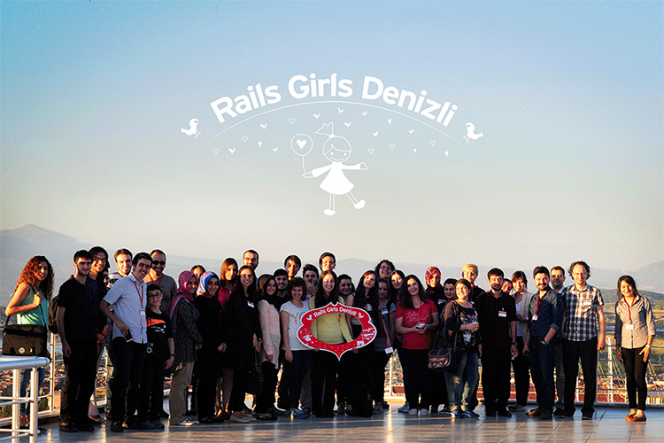
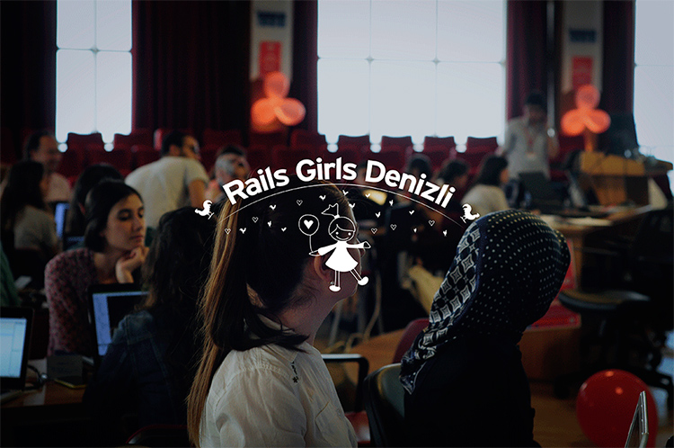
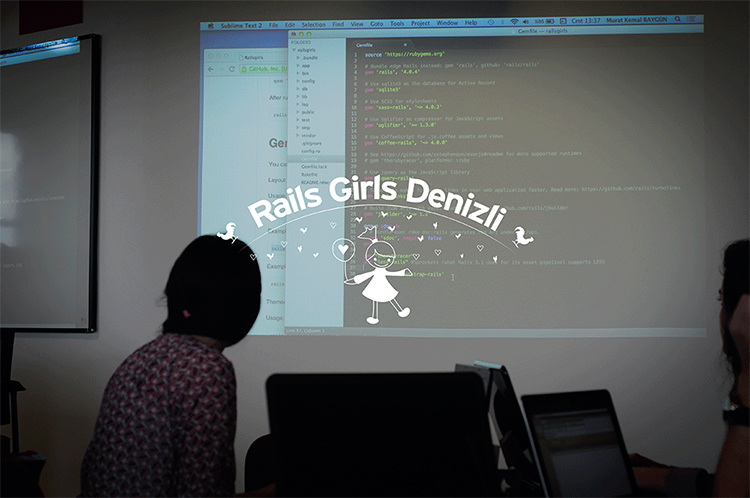
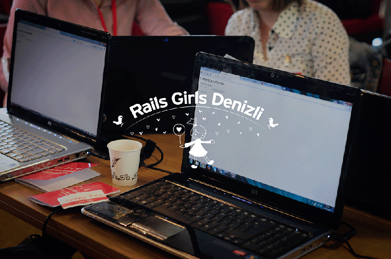
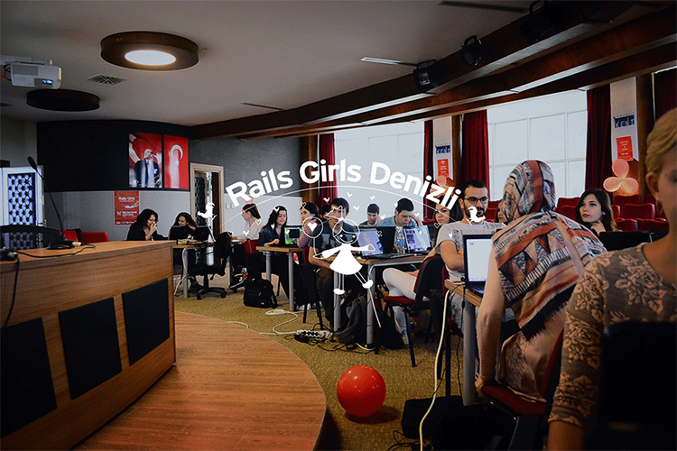
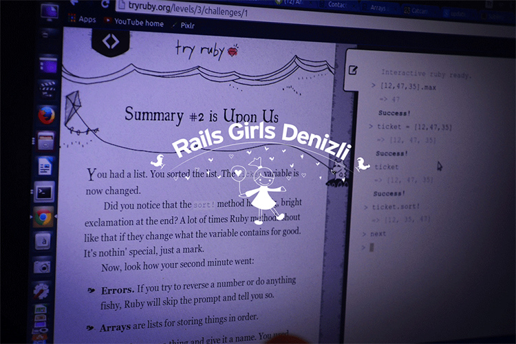
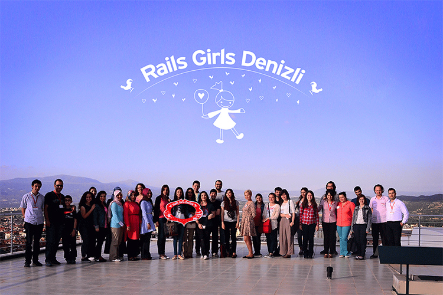

Rails Girls Denizli Etkinliğini nasıl düzenledik?
Rails Girls, Finlandiya kökenli bir topluluktur. Amacı, dünyadaki Rails bilen ve Rails ile geliştirme yapan kadın sayısını arttırmaktır. Dünyanın birçok şehrinde düzenlenmiş veya düzenlenmeye devam eden, Rails Girls etkinliğinin Denizli’ deki ev sahipliğini üstlenmeye karar verdik. Peki, Nasıl?
14 - 15 Mart tarihlerinde düzenlenen Rails Girls Ankara, bize Rails Girls Denizli etkinliğini düzenlemek için ilham kaynağı oldu diyebilirim. Ben ve iş arkadaşlarım - Safiye Sepetçi ve Clara Isabel PANTOJA MUÑOZ - böyle bir etkinlik tüm dünyada düzenleniyorsa, Denizli’ de neden olmasın diye düşündük ve Rails Girls sayfasını incelemeye başladık. Ardından Rails Girls ekibi ile iletişime geçtik, gerekli formu doldurup gönderdik ve bekleme sürecine geçtik. Biz bu süreci beklerken daha önce Rails Girls İstanbul etkinliğini gerçekleştiren Kader Sucuk ve Ender Ahmet Yurt bizimle iletişime geçip her türlü yardım ve destekte bulundular.
Ardından Rails Girls organizatörlerinden Linda Liukas bizimle iletişime geçip, rails girls github reposunu bizimle paylaştı. Biz de Rails Girls Denizli sayfasını uygun metodlara göre düzenlemeye başladık. Düzenlediğimiz siteyi direk github rails girls reposuna gönderiyorduk. Uluslararası bir etkinliği şehrinizde yapmanın verdiği heyecan paha biçilemezdi.

Etkinliğin gerçekleşeceği yer için Denizli’ nin Silikon Vadisi olarak adlandırılan Pamukkale Teknokent AŞ Konferans salonu için Sayın Doç.Dr. Hasalettin Deligöz ile konuştuk ve Hasalettin Bey uluslararası bir etkinlikte bulunmaktan mutluluk duyacağını bizlere her türlü yardımda ve destekte bulunacağını belirtti, böylece etkinliği Pamukkale Teknokent Konferans salonunda gerçekleştirmeye karar verdik.
Tabi böyle bir etkinlik için sponsorlar olmazsa olmazlardan, Bulutfon, Netinternet ve Lab2023 sponsorlarımız olmayı kabul ettiler.
Organize olduktan sonra, sıra mentörleri kararlaştırmaya geldi. Aslında mentörleri kararlaştırırken çok fazla zorlanmadık, nedeni ise çalıştığım Lab2023 firmasında rails ile uygulama geliştiriliyor olmasıydı.


Rails Girls Denizli sayfasını tasarlarken logomuzu belirlemek gerekiyordu, sonuçta uluslararası bir etkinlikte Denizli’ yi Dünya’ ya
ufakta olsa tanıtmayı amaçlıyorduk, bu nedenle Denizli'yi en iyi ne temsil eder?
konusu üzerinde düşünmeye başladık. Denizli
deyince insanların aklına direk horozu, Hierapolis antik kenti ve Pamukkale Travertenleri gelmekteydi.
Bu donelerden yola çıkarak logomuzu oluşturduk.
Etkinlikte sadece kodlama değil aynı zamanda kadınlara yönelik ilgi çekici konuların da olması gerektiği düşüncesindeydik.Bu nedenle Kadınların iş hayatındaki yeri
başlıklı bir sunum için, bu sunumu Denizli’ de en iyi aktarabilecek bayanlardan biri olan Sayın Vildan Çaputçu ile
iletişime geçtik. Vildan Hanım bizi kırmayıp Kadınların iş hayatındaki yeri
konulu sunumunu hazırladı. Ayrıca etkinlikte Fotograf
konulu bir sunum için Serdar Yağcı
ile iletişime geçtik. Serdar Bey’ in hazırladığı sunum gerçekten büyüleyiciydi.
Afişlerin hazırlanması, sticker gibi diğer materyalleri rails girls sunduğu için bu konuda zorlanmadık. Site tamamlandıktan sonra Rails Girls Ankara organizasyon ekibinden Sezen Balibeyoğlu ile iletişime geçip duyuru ve süreçlerin nasıl olması konusuna dair bilgi aldık.


Etkinlikte farklı sektördeki kadınların rails kodladıklarını gördükten sonra sanırım etkinliğin belirtilen amacına ulaştığını düşünüyorum. Başta bu organizasyonda bizlere desteğinden ve yardımlarından ötürü sponsorlarımıza Bulutfon, Netinternet ve Lab2023, bütün sorularımıza cevap veren Kader Sucuk’ a, Ender Ahmet Yurt’ a, Sezen Balibeyoğlu’ na, etkinlik yeri için Sayın Doç.Dr. Hasalettin Deligöz e, değerli sunumları ile bizleri bilgilendiren Vildan Çaputçu ve Serdar Yağcı’ ya, katılımcılara, değerli mentörlerimize ve emeği geçen herkese teşekkürlerimizi sunarız .


Rails Girls Denizli etkinliği ile ilgili resimlerin tamamını Flickr hesabımızdan görebilirsiniz.
comments powered by Disqus